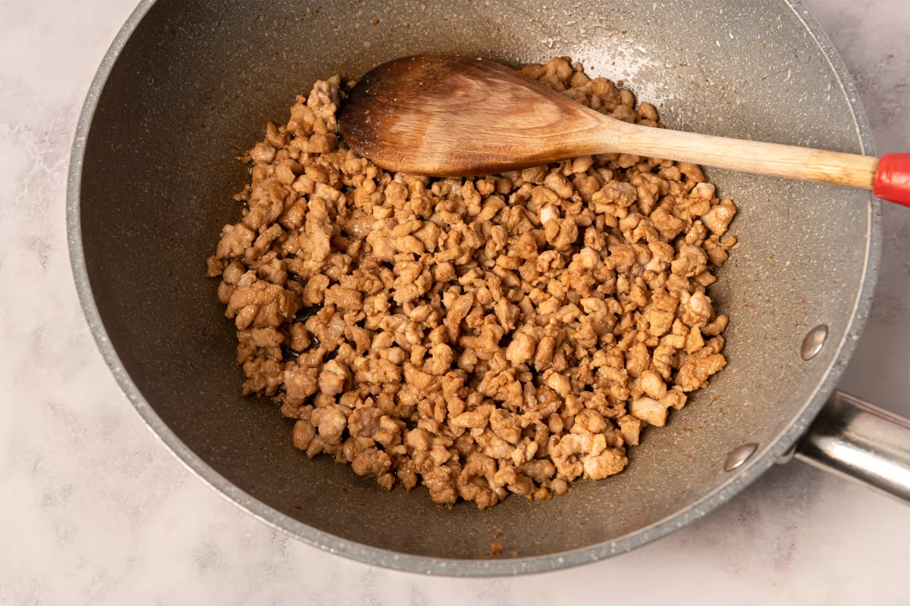
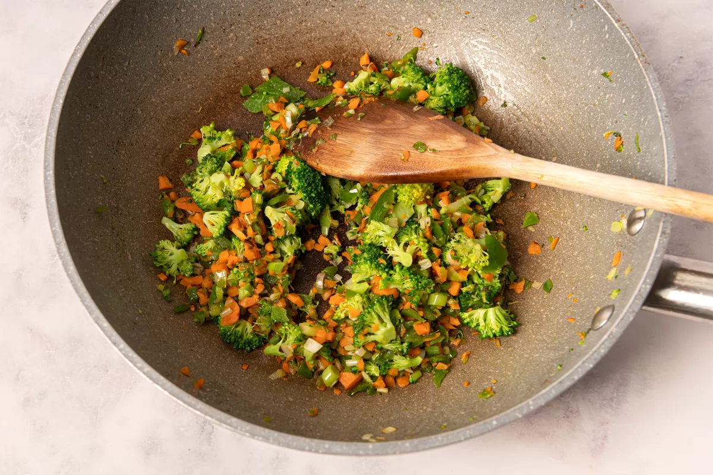

Introducción
Los restaurantes de comida china empezaron a florecer en España hace ya varias décadas y se hicieron muy populares no solo por su exotismo, sino por sus platos saciantes y gustosos a buen precio. Hoy en día no hay ciudad, por pequeña que sea, que no tenga una o varias opciones de comida asiática en su oferta hostelera.
Pero ya es vox populi que las preparaciones más celebradas de estos restaurantes poco tienen que ver con la gastronomía tradicional del gigante asiático: los chinos, con su excelente instinto comercial, adaptaron su tipo de cocina al gusto occidental, y no se puede negar que su estrategia funcionó muy bien.
Hormigas subiendo al árbol podría ser un ejemplo de ello: en muchos restaurantes chinos, este plato se termina delante del comensal, sirviendo la salsa por encima de los fideos fritos que, al humedecerse, emiten un curioso sonido chisporroteante. Sin embargo, parece que esta práctica tiene más de performance que de tradición, y en China normalmente los fideos se terminan en el wok donde se cocina la salsa.
Sea como fuere, es un plato muy sabroso y sus ingredientes, lejos de ser exóticos, son bastante habituales, Además, es muy versátil pues cambiando el tipo de verduras y de carne, incluso omitiendo esta última, podemos obtener multitud de variantes de la misma receta.
Los fideos utilizados suelen ser fideos de judía mungo, también llamados de celofán, pero con fideos de arroz (que son más fáciles de encontrar) la receta sale muy bien. Si queremos una versión más ligera, en vez de freír los fideos podemos simplemente hidratarlos en agua caliente y escurrirlos muy bien antes de mezclarlos con la salsa. Quedarán más suaves de textura.
En cuanto al toque picante, en esta ocasión hemos utilizado salsa laoganma, disponible en tiendas de alimentación asiática, pero podemos sustituirla por cualquier otra salsa picante, copos de chile o simplemente omitirla.
Información de la receta
Tiempo de preparación: 15 minutos
Tiempo de cocinado: 25 minutos
Tiempo total: 40 minutos
Raciones: 4
Categoría: plato principal
Tipo de cocina: china
Calorías por ración (kcal): 1041
Ingredientes de hormigas suben al árbol para 4 personas
- 300 g de filetes de lomo de cerdo
- 1 trocito de jengibre fresco
- 3 cucharadas de salsa de soja
- 1 cucharada de azúcar
- 4 cucharaditas de laoganma (opcional)
- 500 ml de aceite de girasol
- 300 g de fideos de arroz
- 1 manojo de cebolletas chinas
- 1 pimiento verde tipo italiano
- 2 zanahorias
- 70 g de brécol
- 2 cucharaditas de almidón de maíz (maicena)
- 300 ml de caldo de carne o pollo
Pasos a seguir
- Picamos 300 g de filetes de lomo de cerdo en trocitos muy pequeños, como si fuesen para un tartar.
- Pelamos y rallamos 1 trocito de jengibre fresco.
- Mezclamos en un bol grande 3 cucharadas de salsa de soja, 1 cucharada de azúcar, 4 cucharaditas de laoganma (si nos gusta el picante) y el jengibre rallado.
- Añadimos la carne al bol, removemos bien y la dejamos macerar mientras continuamos con la receta.
- Ponemos en un wok o sartén honda 500 ml de aceite de girasol. Lo calentamos sin que se queme y vamos friendo en él 300 g de fideos de arroz, en cuatro o cinco tandas, hasta que se hinchen y queden crujientes. Los fideos al freírse aumentan mucho su volumen, por eso es importante freírlos por tandas. Los ponemos a escurrir en una rejilla.
- Picamos finamente 1 manojo de cebolletas chinas, reservando las partes más verdes para la decoración final.
- Picamos también lo más fino posible 1 pimiento verde, 2 zanahorias peladas y 70 g de flores de brécol.
- Retiramos el aceite del wok y dejamos una pequeña cantidad para preparar el resto de ingredientes. Lo calentamos a fuego fuerte y doramos rápidamente la carne con su jugo de maceración. Cuando tome color, la retiramos.

- A continuación, sofreímos las verduras picadas a fuego fuerte para que conserven cierta firmeza. Si es necesario, podemos añadir algo más de aceite. Cuando estén listas, devolvemos la carne al wok y mezclamos bien.

- En un cuenco con un poco del caldo o agua caliente, disolvemos 2 cucharaditas de almidón de maíz.
- Agregamos el almidón disuelto al wok junto con 300 ml de caldo de carne o pollo. Cocinamos a fuego medio durante unos minutos, removiendo de vez en cuando.
- Finalmente, añadimos los fideos al wok y dejamos que se cocinen unos minutos, removiendo cuidadosamente hasta que queden integrados en la salsa. Si nos quedan muy secos, podemos añadir algo más de caldo o agua caliente.
- Disponemos los fideos con su salsa en una fuente de servir y echamos por encima las partes verdes de las cebolletas que habíamos reservado. Servimos recién hecho.
Resumen fácil de preparación
- Picamos muy pequeñito el lomo de cerdo
- Pelamos y rallamos el jengibre
- Ponemos en un bol el jengibre, salsa de soja, azúcar y salsa picante
- Mezclamos la carne con este aliño y la reservamos
- Freímos por tandas los fideos
- Picamos finamente las cebolletas, reservando las partes verdes
- Picamos el pimiento verde, las zanahorias y el brécol
- Doramos la carne en el wok con un poco de aceite y reservamos
- Sofreímos las verduras en el mismo wok y agregamos la carne
- Desleímos el almidón en un poco de caldo o agua caliente
- Añadimos al wok el almidón y el resto del caldo y cocinamos unos minutos
- Incorporamos los fideos fritos y esperamos a que se integren en la salsa
- Servimos con las partes verdes de la cebolleta por encima